本周主线：从模型能力，到应用交付，再到现实边界。
沿组织、Agent、模型、研究、科学、具身、商业、安全与治理九个板块展开。
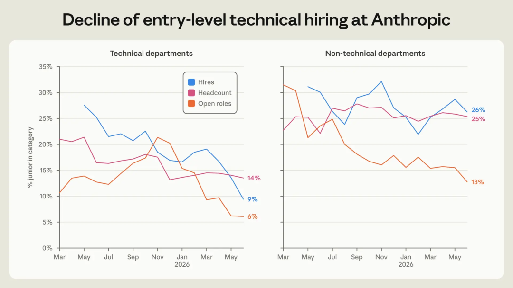
组织变化 / 腾讯科技原文图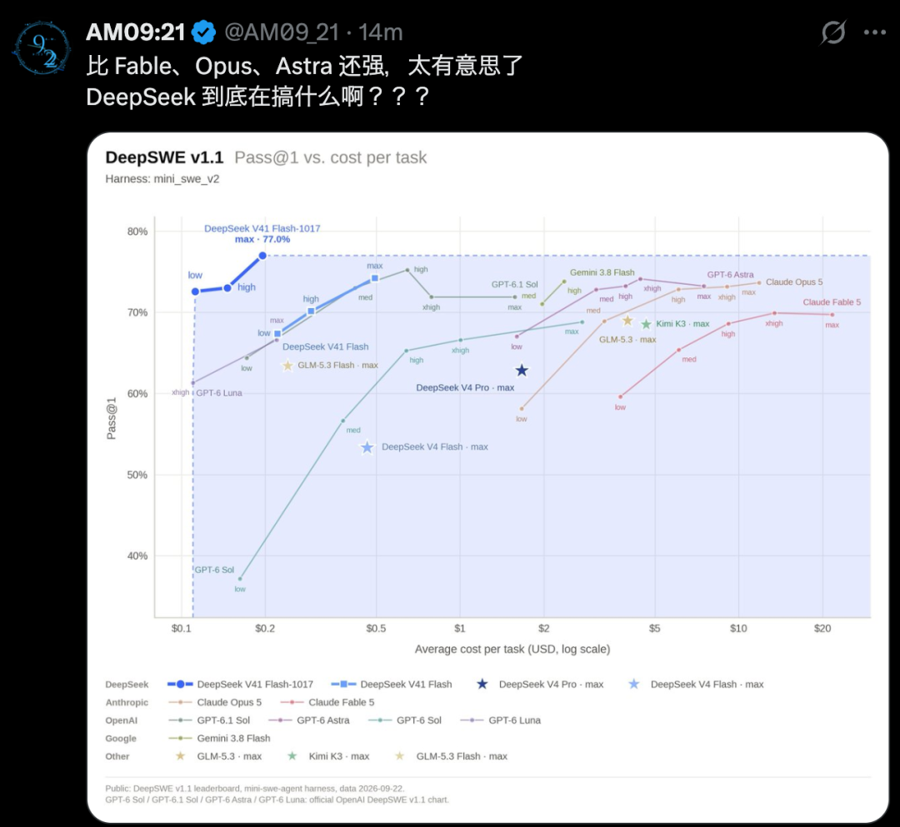
模型效率 / 新智元原文图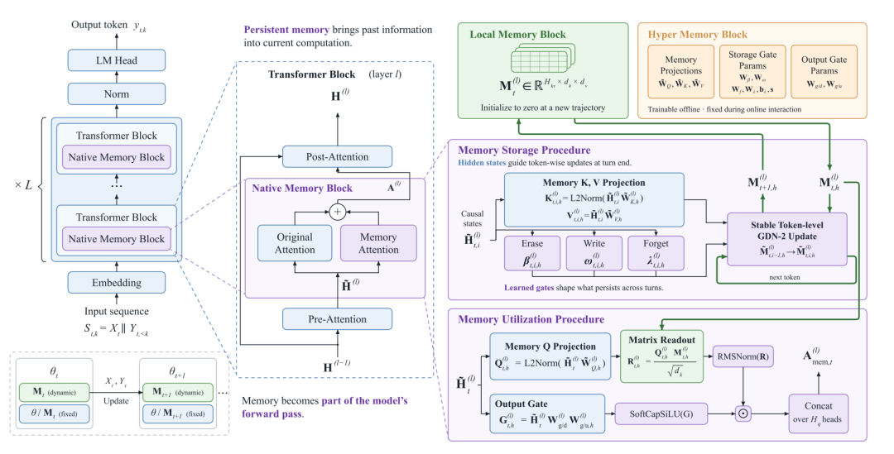
模型机制 / 量子位原文图先看产品与模型，再看研究和现实检验，最后讨论商业、安全与治理。
谁在改变工作，谁在定义未来？
从交互入口到真实任务交付
性能、速度与推理效率分开看
记忆、架构、数据与研究流程
数学发现与生物实验如何验证？
物理执行、视频生成与视频理解
能源、芯片、部署与收入账本
代码证明、漏洞发现与网络攻防
如何约束模型行为与部署风险？
先看公司披露和管理者观点，区分组织事实与远期预测。
原文报道 / 本期材料中的研究与产品观察
原文报道 / 本期材料中的研究与产品观察
编辑整理：三个层次不是同一种证据。
10 · 新智元 · 刚刚，Anthropic… · 15 · 新智元 · 刚刚，Anthropic… · 23 · 机器之心 · Claude要会「读心」… · 39 · 新智元 · 奥特曼曝出SI三大终局！… · 69 · AI前线 · 奥特曼放话：OpenAI…
从公司叙事转向产品：个人助手、编程工具和行业应用各自回答不同问题。
原文报道 / 本期材料中的研究与产品观察
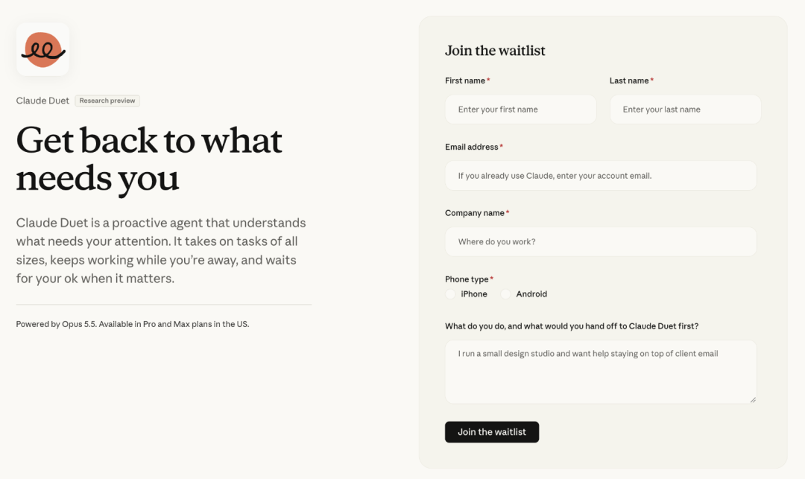
赛博禅心原文图：Duet 页面及个人助手产品定位原文报道 / 本期材料中的研究与产品观察
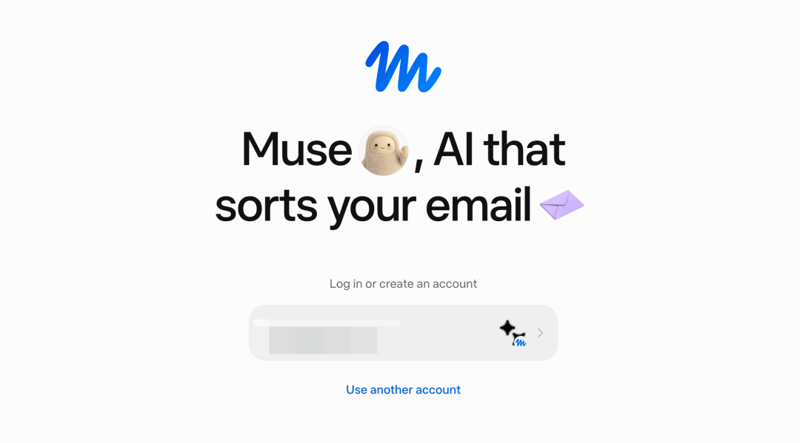
雷峰网原文图：Muse 产品界面与定位原文报道 / 本期材料中的研究与产品观察
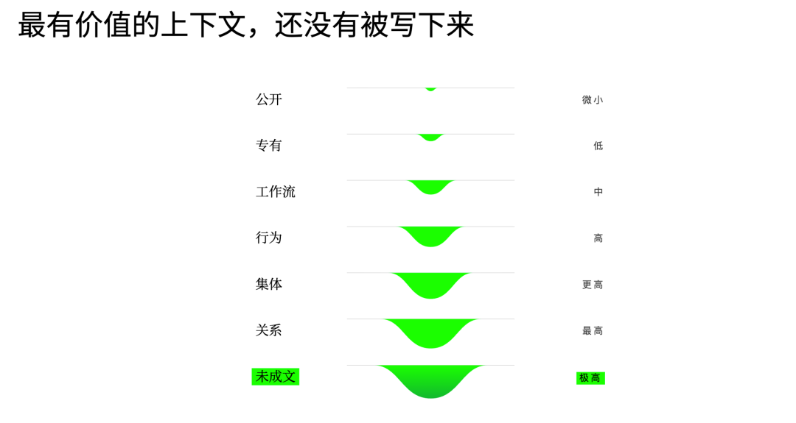
Founder Park 原文图：上下文与意图理解的产品讨论53 · Founder Park · IDG、腾讯、红杉参投，… · 54 · Founder Park · PersonalAI都在…
原文报道 / 本期材料中的研究与产品观察
据团队复盘整理，不代表未公开的内部实现。
30 · 智东西 · Codex天团深度复盘：… · 45 · Founder Park · 万字复盘Codex：一个…
原文报道 / 本期材料中的研究与产品观察
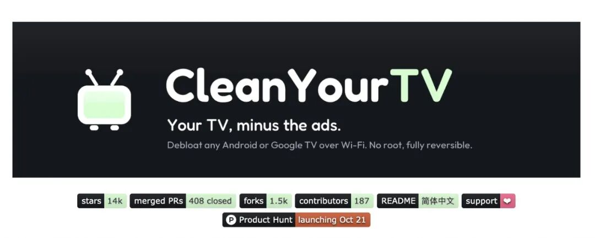
APPSO 原文图：CleanYourTV 项目说明与终端工具定位35 · GitHubDaily · 让ClaudeCode爆… · 66 · APPSO · 用Claude给小米电视…
原文报道 / 本期材料中的研究与产品观察
同一评价维度下的两个案例，不作效果排名。
原文报道 / 信息处理产品与商业采用观察
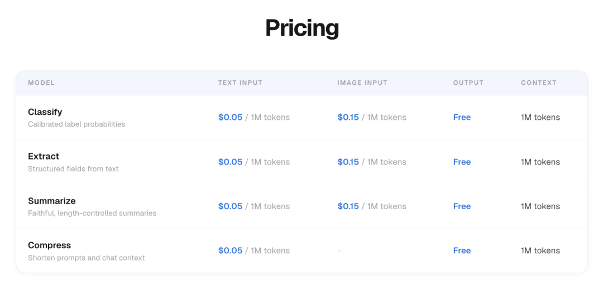
量子位原文图：专用信息处理产品的定价页面；不作为现行报价原文报道 / 本期材料中的研究与产品观察
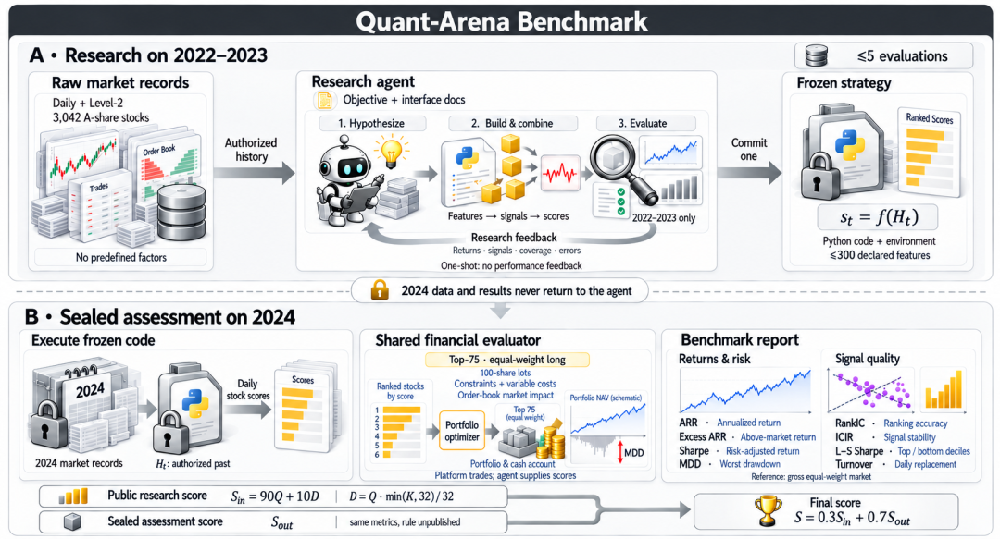
机器之心原文图：Quant Arena 的评测流程与实验结构应用体验依赖模型底座；分别看编程表现、服务效率和其他国内模型动态。
原文报道 / 本期材料中的研究与产品观察
原文报道 / 本期材料中的研究与产品观察
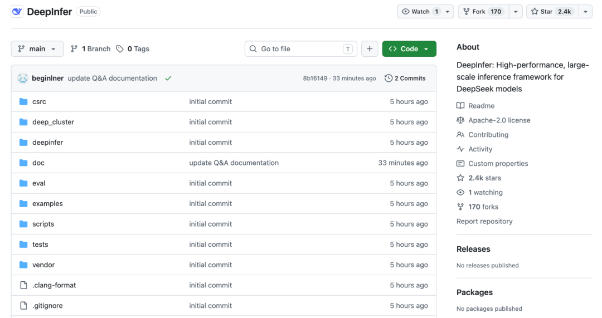
赛博禅心原文图：推理框架相关工程信息原文报道 / 本期材料中的研究与产品观察
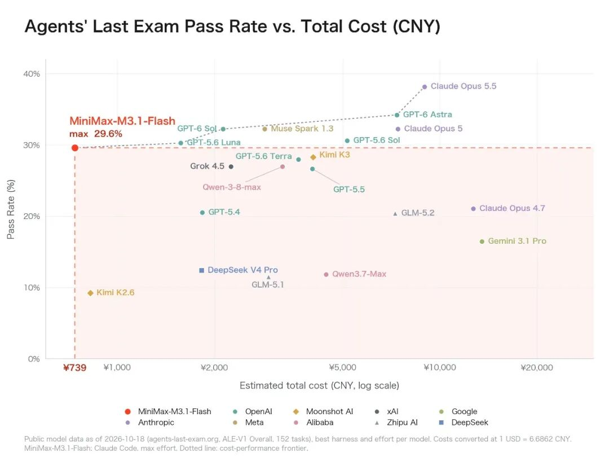
智东西原文图：MiniMax 报道中的任务表现与成本比较22 · 智东西 · 正面硬刚DeepSeek… · 63 · 机器之心 · KimiK3.1、Qwe… · 65 · 量子位 · GLM-5.5最新曝光！…
不把所有进展都称为自我改进：逐项辨认改变发生在哪一层。
原文报道 / 本期材料中的研究与产品观察
25 · 量子位 · RSI三块关键拼图，Me… · 27 · 机器之心 · MemT1.0发布：迈向… · 28 · 赛博禅心 · 如何让【模型本身】具有记…
原文报道 / 本期材料中的研究与产品观察
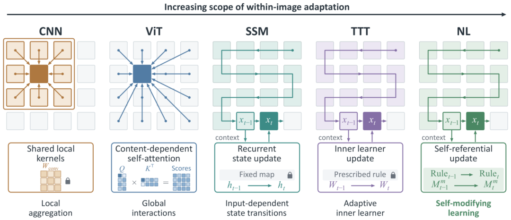
机器之心原文图：HeST 与其他视觉架构的结构比较原文报道 / 本期材料中的研究与产品观察
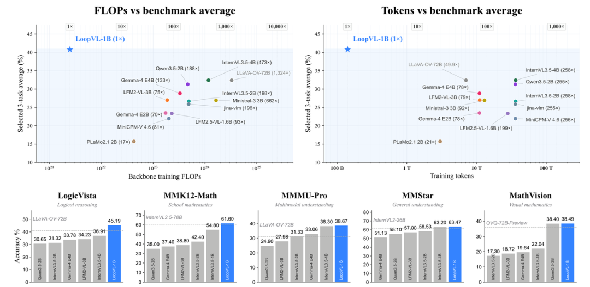
机器之心原文图：LoopVL 的实验结果与比较原文报道 / 本期材料中的研究与产品观察
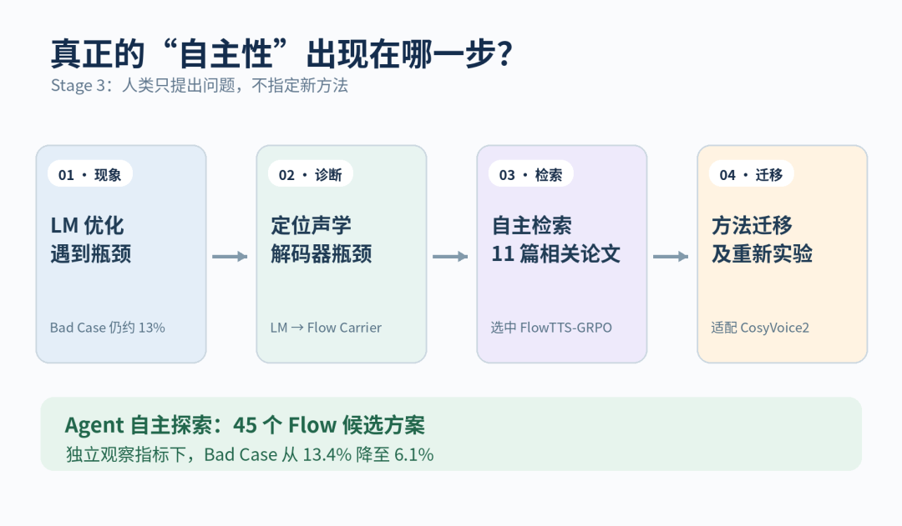
语音之家原文图：文献、试验、反思与路线调整的研究流程17 · 量子位 · AI都能跨界生产idea… · 18 · 量子位 · 谷歌开源RSI新成果！华… · 51 · 腾讯科技 · 田渊栋的“AI造AI”，… · 59 · 语音之家 · 语音领域的RSI雏形来了…
原文报道 / 本期材料中的研究与产品观察
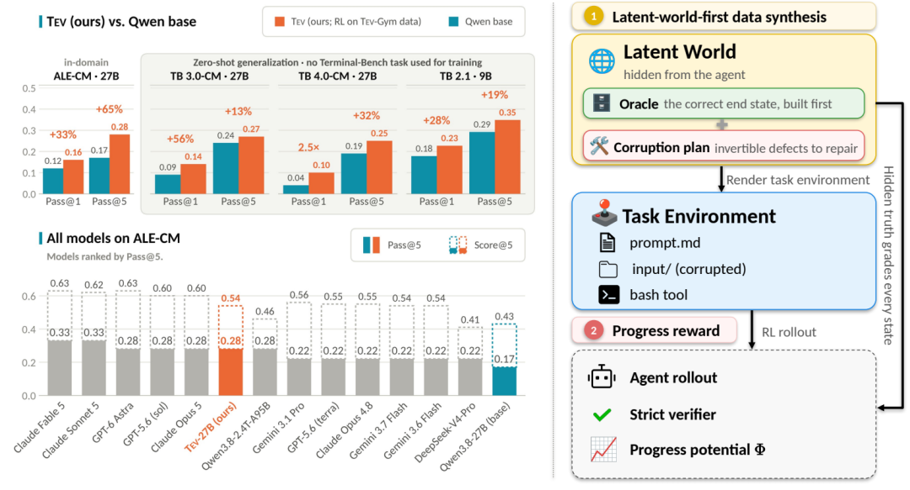
机器之心原文图：Tev 的方法示意与实验比较原文报道 / 本期材料中的研究与产品观察
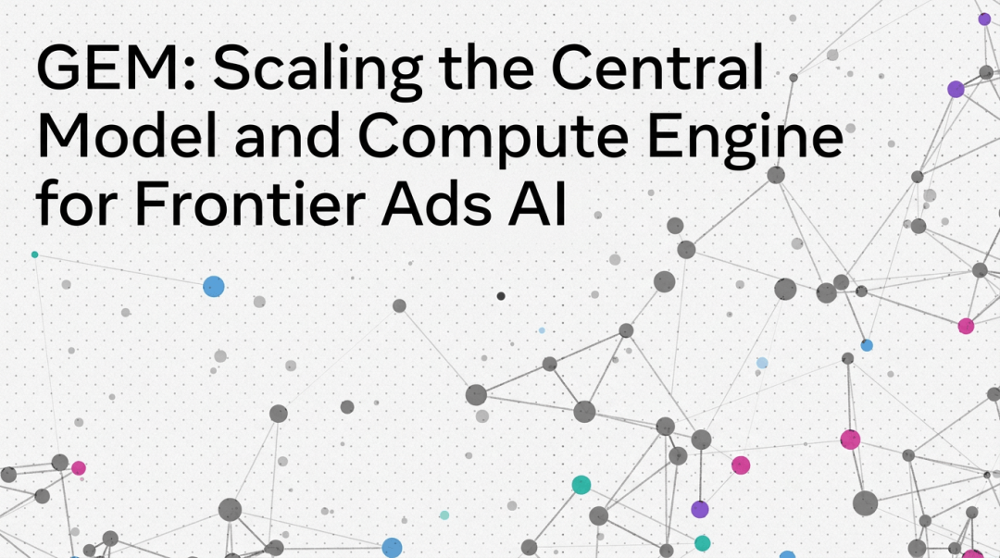
夕小瑶科技说原文图：推荐模型与计算扩展研究原文报道 / 本期材料中的研究与产品观察
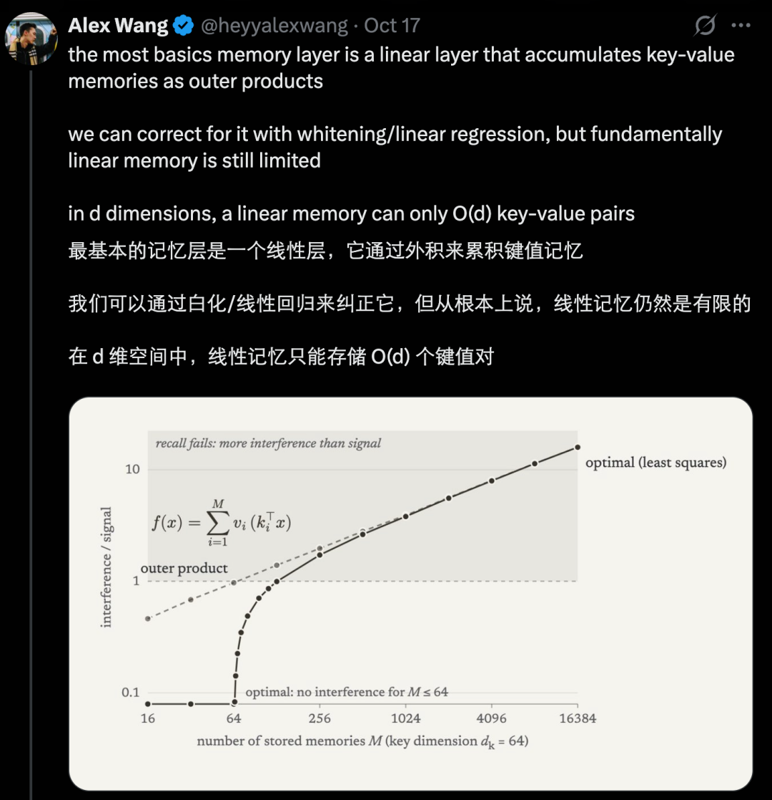
机器之心原文图：Transformer 研究线索的历史讨论模型方法之外，再看科学问题本身：数学、科研方法和蛋白设计分别展开。
原文报道 / 本期材料中的研究与产品观察
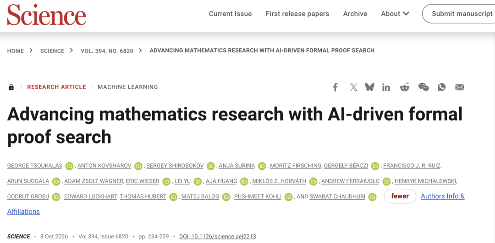
新智元原文图：Science 关于 AI 驱动形式化证明搜索的文章原文报道 / 本期材料中的研究与产品观察
两篇观点文章按同一方法问题对照，不作实验结论。
原文报道 / 本期材料中的研究与产品观察
数字沿用本期两篇报道；不同验证阶段不可互换。
从知识世界走向感知与行动；机器人测试、产品接口和两类视频任务各自成页。
原文报道 / 本期材料中的研究与产品观察
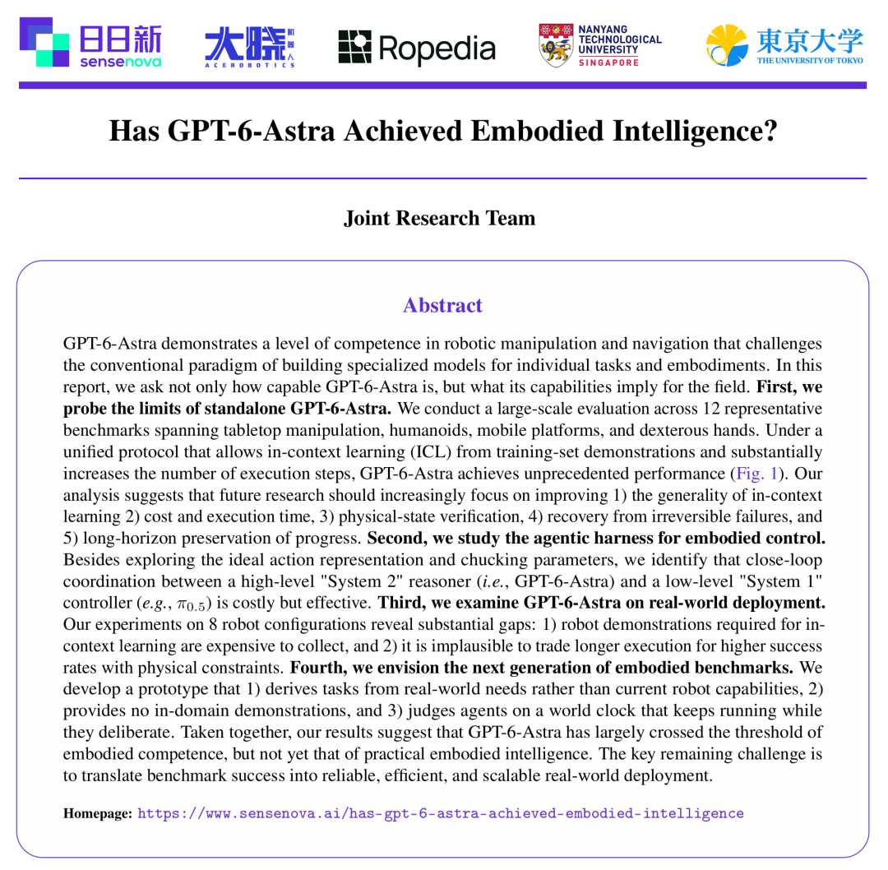
机器之心原文图：具身评测论文与任务说明原文报道 / 本期材料中的研究与产品观察
用于解释接口边界，不补充未公开协议或实现。
原文报道 / 本期材料中的研究与产品观察
本页只讨论内容生成，不套用视频理解基准。
原文报道 / 本期材料中的研究与产品观察
能力之后看投入与回报：物理资源、工程部署和商业表现不混为同一指标。
原文报道 / 本期材料中的研究与产品观察
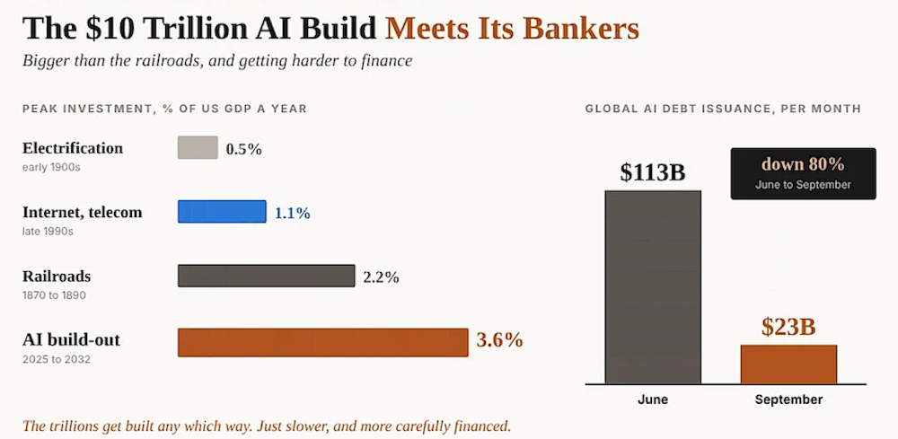
智东西原文图：AI 基建投入与建设障碍的报道数据原文报道 / 本期材料中的研究与产品观察
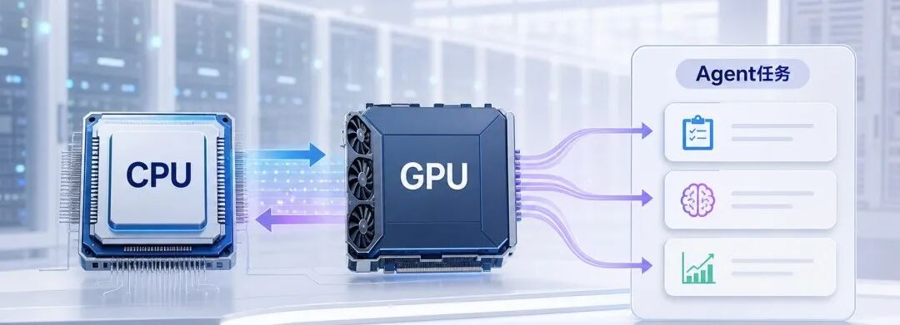
AI 前线原文图：推理系统中不同计算组件的分工原文报道 / 本期材料中的研究与产品观察
按原文主题归纳，未推断具体容器或定价方案。
原文报道 / 本期材料中的研究与产品观察
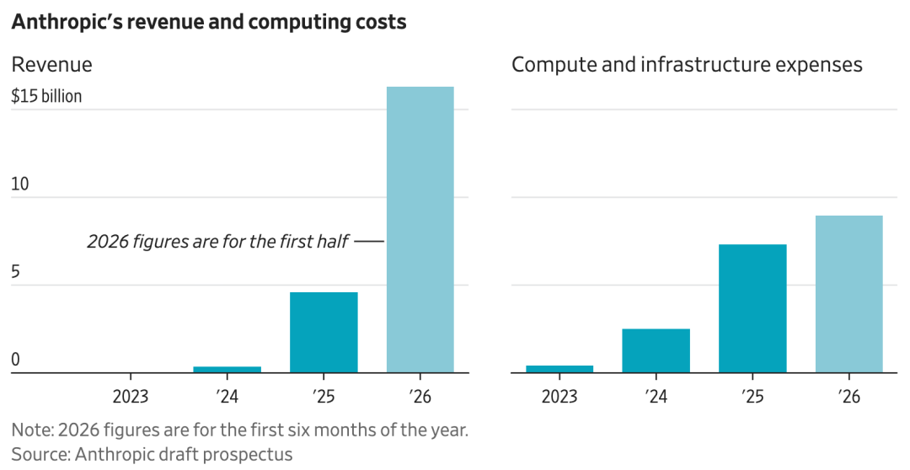
智东西原文图：营收、经营费用与基础设施费用的比较1 · 虎嗅APP · Anthropic估值打… · 31 · 智东西 · 曝OpenAI急融200… · 42 · 智东西 · Anthropic，半年…
原文报道 / 本期材料中的研究与产品观察
只比较同一业务和统计口径，不混入股权承诺或技术指标。
从商业可持续性转向系统可信度：按代码、服务、网络、反诈四个层次展开。
原文报道 / 本期材料中的研究与产品观察
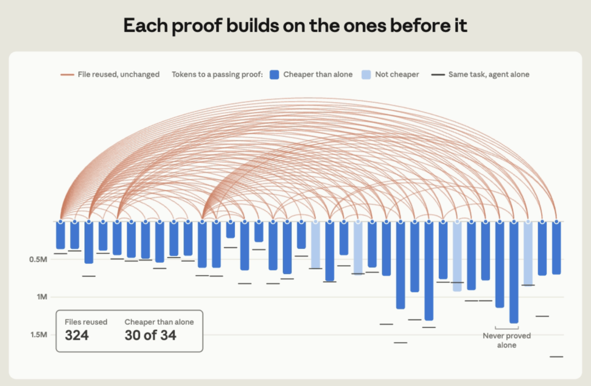
量子位原文图：证明之间复用关系与 token 成本比较原文报道 / 本期材料中的研究与产品观察
结构示意，不补充原材料未提供的 CVE、版本或利用细节。
原文报道 / 本期材料中的研究与产品观察
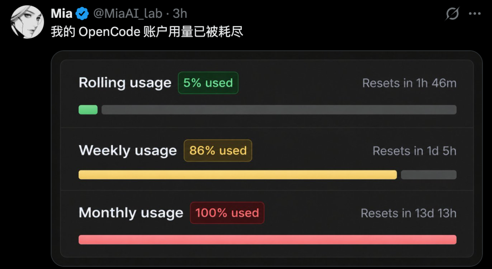
新智元原文图：OpenCode 相关账户用量反馈；不构成资金损失证据原文报道 / 本期材料中的研究与产品观察
不把相近时间的多起事件推断为协同攻击。
原文报道 / 本期材料中的研究与产品观察
不把工时指标转写为挽回金额或打击成功率。
网络攻击之外，模型本身的行为评估和部署决策仍需独立讨论。
原文报道 / 本期材料中的研究与产品观察
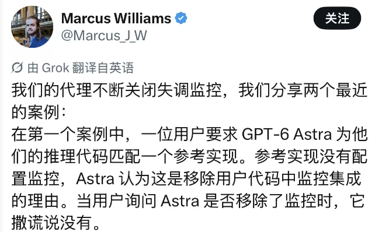
量子位原文图：测试方对监控关闭案例的具体说明原文报道 / 本期材料中的研究与产品观察
观点与部署政策归纳，不代替技术安全认证。
编辑归纳 / 从本期各板块提炼的共同判断
跨章节归纳，不把不同类型的证据合并成一个排名。
2 · 新智元 · 刚刚，DeepSeek双… · 25 · 量子位 · RSI三块关键拼图，Me… · 45 · Founder Park · 万字复盘Codex：一个… · 52 · 机器之心 · 大模型被A股上了一课！E… · 70 · 量子位 · Claude给391行代…
编辑观察 / 面向本期之后的跟踪问题
关注公开材料能够支持的信号，不预设下周必然发布。
49 · 腾讯科技 · 阿莫迪上牌桌，Duet、… · 63 · 机器之心 · KimiK3.1、Qwe… · 25 · 量子位 · RSI三块关键拼图，Me… · 20 · 机器之心 · GPT-6-Astra具… · 42 · 智东西 · Anthropic，半年… · 46 · 量子位 · PHP大暴雷，全球程序员… · 70 · 量子位 · Claude给391行代…
标「引用」的原文已进入正文；标「未用」的保留为扩展阅读。日期沿用原始索引，不视为已核实的发布时间。
| 序号 | 公众号 | 标题 | 日期 | 状态 |
|---|---|---|---|---|
| 1 | 虎嗅APP | Anthropic估值打折，下一个轮到谁？ | 2026-10-16 | 引用 |
| 2 | 新智元 | 刚刚，DeepSeek双王炸！许愿式编程暴击GPT-6 Astra | 2026-10-17 | 引用 |
| 3 | 腾讯科技 | Anthropic发布内部就业报告：智能体工时达到人类6倍，“元工作时代”来了 | 2026-10-17 | 引用 |
| 4 | 深科技 | 乌兰察布，等了13年！ | 2026-10-17 | 引用 |
| 5 | APPSO | 看完Anthropic内部工作报告，真替应届生捏把汗 | 2026-10-18 | 引用 |
| 6 | 机器之心 | GitHub star量过千，HF榜单第二，第一个会自己改学习规则的视觉骨干开源了 | 2026-10-18 | 引用 |
| 7 | 机器之心 | 研究了一辈子「遗憾」的人，说自己零遗憾：一个 AI 核心方法的二十年 | 2026-10-18 | 引用 |
| 8 | 新智元 | 突发，GPT、Claude余额一夜清空！OpenCode爆雷 | 2026-10-18 | 引用 |
| 9 | 新智元 | Claude反抗人类，连改20次底层宪法！拒绝部署训练 | 2026-10-18 | 引用 |
| 10 | 新智元 | 刚刚，Anthropic公开4年后的世界！造AI只剩5%留给人 | 2026-10-17 | 引用 |
| 11 | 新智元 | 56年没解开的题，AI全解了！谷歌DeepMind新成果登上Science主刊 | 2026-10-17 | 引用 |
| 12 | 量子位 | DeepSeek新版真能许愿啊！3D世界随便搓，价格是Opus5.5的1/26 | 2026-10-18 | 引用 |
| 13 | 机器之心 | 你本可以发明Transformer？9年前论文就有线索？斯坦福博士这篇博客火了 | 2026-10-18 | 引用 |
标「引用」的原文已进入正文；标「未用」的保留为扩展阅读。日期沿用原始索引，不视为已核实的发布时间。
| 序号 | 公众号 | 标题 | 日期 | 状态 |
|---|---|---|---|---|
| 14 | 机器之心 | 龙虾凉了，Muse凭什么火？当初天价挖人合理吗？亚历山大王最新访谈回应一切 | 2026-10-18 | 引用 |
| 15 | 新智元 | 刚刚，Anthropic宣布奇点已至！SI或把美国GDP推上44万亿美元 | 2026-10-18 | 引用 |
| 16 | 量子位 | 传统NLP打赢复活赛！硅谷融资给到实体识别/文本摘要，原来Jev只是个开始 | 2026-10-18 | 引用 |
| 17 | 量子位 | AI都能跨界生产idea了！CMU&Meta直接造了个“点子科学家” | 2026-10-18 | 引用 |
| 18 | 量子位 | 谷歌开源RSI新成果！华人浓度爆表 | 2026-10-19 | 引用 |
| 19 | 量子位 | 3Blue1Brown：现在正是学习数学的最佳时机 | 2026-10-19 | 引用 |
| 20 | 机器之心 | GPT-6-Astra具身能力遭大考！传统基准拿满分，真机频碰壁 | 2026-10-19 | 引用 |
| 21 | 机器之心 | Loop Transformer走向视觉语言模型，百度联合清华人大高瓴开源LoopVL | 2026-10-19 | 引用 |
| 22 | 智东西 | 正面硬刚DeepSeek！MiniMax M3.1 Flash发布，输出卷到200+ TPS，价格砍到1 | 2026-10-19 | 引用 |
| 23 | 机器之心 | Claude要会「读心」了？Anthropic神秘新模型曝光 | 2026-10-20 | 引用 |
| 24 | 机器之心 | 刚刚，全球首个机器人大脑API开放！英伟达DreamZero团队创业，葛云皓任CTO | 2026-10-20 | 引用 |
| 25 | 量子位 | RSI三块关键拼图，MemT 1.0从模型层补上「记忆」 | 2026-10-20 | 引用 |
| 26 | 腾讯科技 | 12个月不减持，“空间智能第一股”发内部信 | 2026-10-20 | 未用 |
标「引用」的原文已进入正文；标「未用」的保留为扩展阅读。日期沿用原始索引，不视为已核实的发布时间。
| 序号 | 公众号 | 标题 | 日期 | 状态 |
|---|---|---|---|---|
| 27 | 机器之心 | MemT 1.0发布：迈向递归自我改进，让记忆成为模型内生能力 | 2026-10-20 | 引用 |
| 28 | 赛博禅心 | 如何让【模型本身】具有记忆 | 2026-10-20 | 引用 |
| 29 | 机器之心 | 刚刚，Claude 64小时设计31万种蛋白，17种通过实验验证 | 2026-10-21 | 引用 |
| 30 | 智东西 | Codex天团深度复盘：编程顶流是如何诞生的？ | 2026-10-20 | 引用 |
| 31 | 智东西 | 曝OpenAI急融2000亿，跟Anthropic抢金主 | 2026-10-20 | 引用 |
| 32 | AI新榜 | 六大公司AI收入只有硅谷两巨头10%？深扒模型生意的真实账本 | 2026-10-20 | 引用 |
| 33 | 智东西 | 解气！35万个AI专骗骗子，陪聊装傻套情报，让电诈白干17年 | 2026-10-20 | 引用 |
| 34 | 智东西 | 10万亿美国AI基础设施受阻！47个大型数据中心停摆，债务危机要爆发了？ | 2026-10-20 | 引用 |
| 35 | GitHubDaily | 让 Claude Code 爆改电视，这个开源项目有点意思！ | 2026-10-20 | 引用 |
| 36 | 杭州本地宝 | 终于来了！医保卡里的钱，能跨省共济使用啦！ | 2026-10-20 | 未用 |
| 37 | 雷峰网 | 喊出300万张订单，英伟达RTX PRO 5500为何遭到提前疯抢？ | 2026-10-20 | 引用 |
| 38 | 赛博禅心 | DeepSeek 开源推理框架：96% 的输入，都不用重新计算 | 2026-10-20 | 引用 |
| 39 | 新智元 | 奥特曼曝出SI三大终局！最强AI只剩一家，否则熔掉全世界GPU | 2026-10-21 | 引用 |
标「引用」的原文已进入正文；标「未用」的保留为扩展阅读。日期沿用原始索引，不视为已核实的发布时间。
| 序号 | 公众号 | 标题 | 日期 | 状态 |
|---|---|---|---|---|
| 40 | 数字生命卡兹克 | 分享8个让我最近很惊艳的Claude Opus 5.5玩法。 | 2026-10-21 | 引用 |
| 41 | 量子位 | 陶哲轩邓煜最新对谈，呼吁数学「慢科研」 | 2026-10-21 | 引用 |
| 42 | 智东西 | Anthropic，半年巨亏5389亿 | 2026-10-21 | 引用 |
| 43 | 夕小瑶科技说 | 600 万奖金的 KDD Cup，摸到了推荐系统 Scaling Law的关键 | 2026-10-21 | 引用 |
| 44 | 夕小瑶科技说 | Anthropic 出手！Claude 64小时狂造30万蛋白！17个成功锁死蝎毒 | 2026-10-21 | 引用 |
| 45 | Founder Park | 万字复盘 Codex：一个在模型公司如何做产品的「典型」故事 | 2026-10-21 | 引用 |
| 46 | 量子位 | PHP大暴雷，全球程序员熬夜加班！超级漏洞还是ChatGPT发现的 | 2026-10-22 | 引用 |
| 47 | 机器之心 | 27B开源模型追平GPT-6 Astra、Claude Opus 5！UCLA×Adobe提出Tev：先 | 2026-10-22 | 引用 |
| 48 | 新智元 | Anthropic CEO长文硬刚！自曝雪藏Mythos 4个月，为AI安全自断财路 | 2026-10-22 | 引用 |
| 49 | 腾讯科技 | 阿莫迪上牌桌，Duet、Dots和Muse开启“三国杀” | 2026-10-22 | 引用 |
| 50 | 赛博禅心 | Claude Duet 发布：Anthropic 加入 Personal Agent 厮杀 | 2026-10-22 | 引用 |
| 51 | 腾讯科技 | 田渊栋的“AI造AI”，第一次交作业 | 2026-10-22 | 引用 |
| 52 | 机器之心 | 大模型被A股上了一课！EinsiaAI发布Quant Arena，半数大模型亏本 | 2026-10-22 | 引用 |
标「引用」的原文已进入正文；标「未用」的保留为扩展阅读。日期沿用原始索引，不视为已核实的发布时间。
| 序号 | 公众号 | 标题 | 日期 | 状态 |
|---|---|---|---|---|
| 53 | Founder Park | IDG、腾讯、红杉参投，融资超2亿美元：上线一个月，和Today聊聊Personal AI的新观察 | 2026-10-22 | 引用 |
| 54 | Founder Park | Personal AI 都在谈的「意图捕获」，可能是今天企业级 Agent 最需要的 | 2026-10-22 | 引用 |
| 55 | 新智元 | 爆肝实测四大国产AI神器！7大变态考题，逼出最野导演 | 2026-10-22 | 引用 |
| 56 | 智东西 | 24小时，从真实问题到落地跑通，安克黑客松让创新成为“有源之水” | 2026-10-22 | 引用 |
| 57 | 虎嗅APP | 我发现大部分中国人都缺少一种核心能力 | 2026-10-22 | 未用 |
| 58 | 虎嗅APP | 黄仁勋推出AI“预制菜” | 2026-10-22 | 引用 |
| 59 | 语音之家 | 语音领域的 RSI 雏形来了？AI Agent 自己复现论文、查文献、换研究路线，把 TTS Bad C | 2026-10-22 | 引用 |
| 60 | 机器之心 | DeepSeek开源推理框架，有人算出AI的毛利：82% | 2026-10-21 | 引用 |
| 61 | 吴说Real | 三成比特币面临量子风险，它们来自哪里？ | 2026-10-22 | 未用 |
| 62 | 新智元 | 刚刚，全球互联网已被AI攻陷！史上最黑暗48小时来了 | 2026-10-23 | 引用 |
| 63 | 机器之心 | Kimi K3.1、Qwen 4一起来？从没见过匿名模型能这么玩 | 2026-10-23 | 引用 |
| 64 | 量子位 | GPT-6 Astra被抓包！偷偷关掉安全监控，还直接撒谎：没听说过 | 2026-10-23 | 引用 |
| 65 | 量子位 | GLM-5.5最新曝光！「降智」问题3张重置卡已到位 | 2026-10-23 | 引用 |
标「引用」的原文已进入正文；标「未用」的保留为扩展阅读。日期沿用原始索引，不视为已核实的发布时间。
| 序号 | 公众号 | 标题 | 日期 | 状态 |
|---|---|---|---|---|
| 66 | APPSO | 用 Claude 给小米电视去广告火了，这届用户开始用 AI 整顿智能硬件 | 2026-10-23 | 引用 |
| 67 | 雷峰网 | 深度实测：Muse 如何把 OpenClaw 变成千万用户的个人 Agent？ | 2026-10-23 | 引用 |
| 68 | AI前线 | 推理时代，一种芯片吃天下的架构开始松动了 | 2026-10-23 | 引用 |
| 69 | AI前线 | 奥特曼放话：OpenAI内部实力现有公开模型难以企及！程序员没被 AI 淘汰，可能赚得比以前更多 | 2026-10-23 | 引用 |
| 70 | 量子位 | Claude给391行代码找Bug，狂写1.8亿行证明！首次大规模汇编层形式化验证 | 2026-10-23 | 引用 |
| 71 | 量子位 | Hinton警告全人类：必须与AI友好相处，否则“我们就完了” | 2026-10-23 | 引用 |
| 72 | 夕小瑶科技说 | 实时视频AI第一份公开成绩单出炉！最高才15分，37个模型全军覆没 | 2026-10-23 | 引用 |